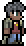

Arms Dealer
| Arms Dealer | |
|---|---|
|  | |
| Statistics | |
| Type | Town |
| Damage | 10 |
| Max Life | 250 |
| Defense | 15 |
The Arms Dealer is an NPC vendor that will spawn once the following criteria have been met:
- There is an empty house.
- You have acquired a gun (the gun must be in your Inventory, not just stored in a chest somewhere).
- It works with ammunition like Musket Ball too, if you have it in your inventory.
The easiest gun to acquire for this purpose is the Musket, which can be obtained by destroying a Shadow Orb.
Once the Arms Dealer has moved into a house, he will sell the following:
Inventory | ||
|---|---|---|
| Item | Cost | Availability |
| | 7 | Always available. |
| | 40 | Every night after defeating the Eater of Worlds for the first time. |
| | 5 | Always available. |
| | 35 | Always available. |
| | 75 | Every night. |
| | 15 | During a Blood Moon (Always available after defeating the Wall of Flesh). |
| | 70 | After defeating the Wall of Flesh. |
Note: As with all NPCs, right-clicking an item will allow multiple purchases rather than purchasing it one by one.
Notes
- The Arms Dealer is very arrogant compared to the other NPCs and seems to have a charismatic personality, being (seemingly) able to tell whether you intend to either buy the Minishark or steal one of his weapons. This, when coupled with the way he speaks, may support that he is based off the traditional gunslinger from old Western movies. He also seems to have a rivalry with the Demolitionist, as he seems to say his products are better than "fireworks".
- While you have the trade window up, his stock will not change even when the requirements are met. Closing the window and bringing it back up fixes this.
- The Space Gun and Laser Rifle do not count towards the 'acquiring a gun' requirement, and will not make the Arms Dealer spawn. This is because they use mana to generate lasers, as opposed to using ammunition that the Arms Dealer would sell. They simply don't interest him.
Quotes
- "Keep your hands off my gun, buddy!"
- "Hey, this ain't a movie, pal. Ammo is extra."
- "I see you're eyeballin' the Minishark... You really don't want to know how it was made."
- "Don't bother with [Name of Demolitionist], I've got all you need right here." (Only if Demolitionist is present.)
- "What's [Name of Demolitionist]'s problem? Does he even realize we sell completely different stuff?" (Only if Demolitionist is present.)
- "Make it quick! I've got a date with [Name of Nurse] in an hour." (Only if Nurse is present.)
- "I want what [Name of Nurse] is sellin'. What do you mean, she don't sell anything?" (Only if Nurse is present.)
- "[Name of Dryad] is a looker. Too bad she's such a prude." (Only if Dryad is present.)
- "I love nights like tonight, there is never a shortage of things to kill" (Only during blood moon.)
- "Man, it's a good night not to talk to anybody, don't you think, [Name of Player]?" (Only during blood moon.)
- "I heard there is a doll that looks very similar to [Name of Guide] somewhere in the underworld. I'd like to put a few rounds in it." (This will be the only message available if Skeletron is defeated, but Wall of Flesh is not.)
History
- 1.1:
- Now has random name given to him on spawn. His death will be reported with this name. Also other NPCs will use it in their quotes.
- Price of Minishark changed. Illegal Gun Parts cost less and are sold every night now, not just during new moons. Shotgun added.
- 1.0.5: Unholy Arrows, Illegal Gun Parts and Silver Bullets were added to inventory. Choice of goods become time of the day and event dependent.
- Pre-Release: Introduced.
| Town NPCs |
|---|
| Arms Dealer Clothier Demolitionist Dryad Guide Merchant Nurse Mechanic Goblin Tinkerer Wizard |